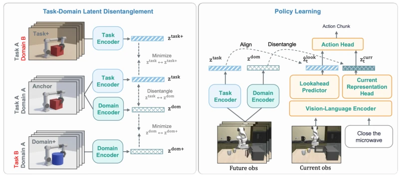
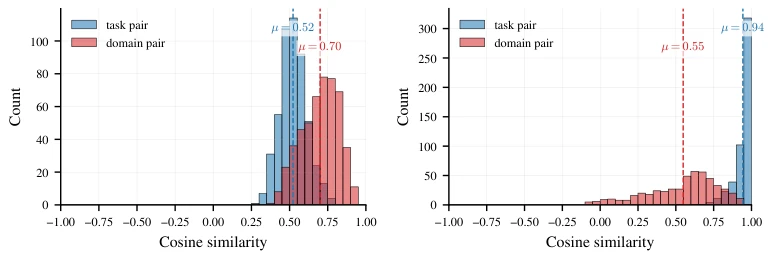
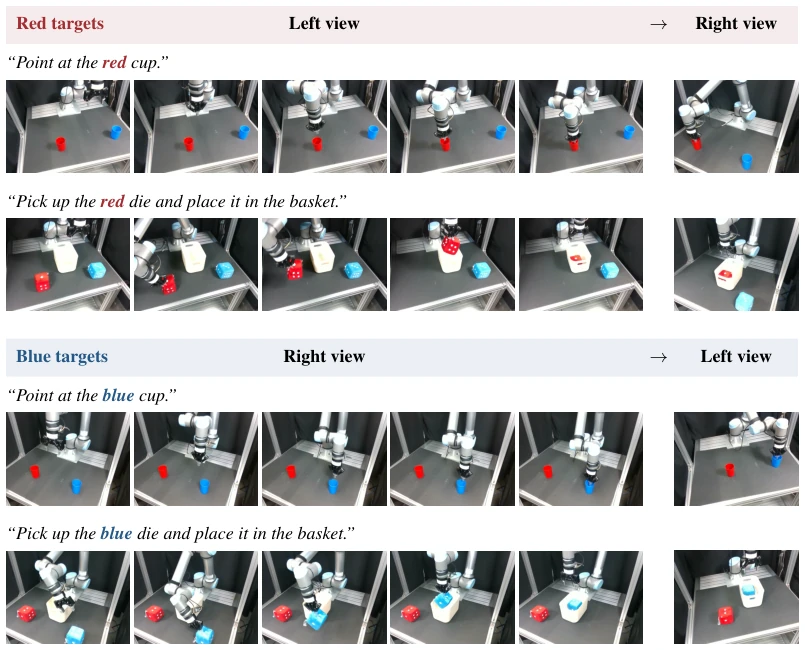
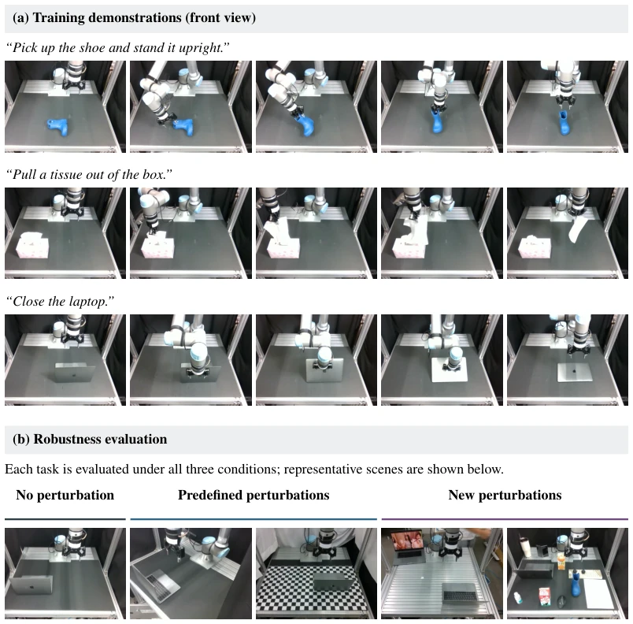
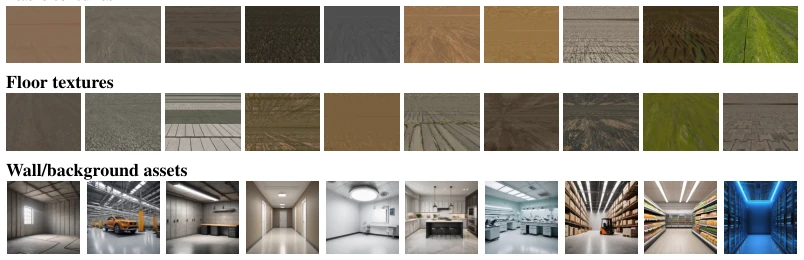

This paper offers a potent remedy for VLA models that run happily in simulation but 'die in the light' once they encounter reality. The authors keenly point out that many models do not truly 'understand' the task but rely on memorizing 'shortcuts'—for example, assuming a red object needs to be picked up upon seeing a red background. The DILL method forcibly pulls models out of visual hallucinations by predicting 'future states with background noise removed'. Although the experimental data is indeed impressive, with an 11.4 percentage point improvement on LIBERO-Plus, one cannot help but critique: this approach relying on extensive synthetic data transformations (changing backgrounds, adjusting lighting) to train 'disentangled' encoders essentially uses data diversity to combat distribution shift, amounting to 'using poison to cure poison'. If real-world disturbances (such as dynamic shadows, new objects) have not appeared in the training set, will this trick still work? The paper acknowledges this point but does not provide a more elegant solution for automatically discovering shortcuts; it can only be described as a robust attempt that 'treats symptoms but not the root cause', yet for the current fragility of VLA, this is indeed a praiseworthy advancement.
Although Vision-Language-Action (VLA) models have demonstrated generalization potential on large-scale datasets, they are extremely fragile when facing visual distribution shifts (such as viewpoint, lighting, background changes) [7, 8, 9]. This fragility stems from 'Shortcut Learning' (Shortcut Learning): policy models do not learn task-relevant semantic structures but exploit spurious correlations between tasks and specific visual domains (such as background color, camera angle) in the training data [10, 11]. For example, when tasks are strongly correlated with specific viewpoints in the training set, if the viewpoint changes during the testing phase, the model often executes the task associated with the viewpoint rather than the instructed task [11]. Existing work mostly starts from the data level (such as synthesizing new viewpoints [18]) or the representation level (such as suppressing viewpoint sensitivity [19, 20]), but often struggles to balance the retention of task-relevant information and the extraction of domain invariance. Furthermore, although some work introduces future prediction (World Models) to assist decision-making [15, 16, 23], directly predicting raw pixels or entangled latent states may still allow the model to retain dependence on domain-specific visual factors, failing to fundamentally solve the task substitution problem. Therefore, how to construct a prediction objective that can clearly separate task structures and domain-specific visual changes is key to improving VLA robustness.

Figure 2: Overview of Domain-Invariant Latent Lookahead. We first learn a Task-Domain Encoder that maps observation chunks into task and domain latents. During policy learning, a Lookahead Predictor predicts a future task latent from the current observation and instruction, while a Current Representation Head produces a domain-disentangled current representation. The two policy latents condition the action head for control.
DILL (Domain-Invariant Latent Lookahead) proposes a two-stage predictive representation learning framework, aiming to supervise VLA policies through domain-invariant future latent states. The overall process is divided into two stages: 'Task-Domain Disentangled Encoder Pretraining' and 'VLA Policy Learning'. First, a Task-Domain Encoder is trained using domain-transformed trajectory data (such as ManiSkill, MimicGen, OXE). This encoder contains two branches: a Task Encoder and a Domain Encoder. By constructing 'task positive pairs' (different domain transformations of the same trajectory chunk) and 'domain positive pairs' (same domain transformation of different trajectory chunks), combined with InfoNCE contrastive loss, it learns task latent vectors sensitive to task changes but invariant to domain changes, and domain latent vectors capturing domain-specific visual changes, respectively. Additionally, a Gaussian Disentanglement Loss is introduced to force task and domain latent vectors to be orthogonal in the joint space, preventing information leakage. Second, in the VLA policy training stage, the pre-trained encoder is used to provide supervision signals. The policy network predicts two vectors from current observations and language instructions: one is the 'Lookahead Latent', aligned to future task latent vectors via InfoNCE loss (i.e., predicting future task structures); the other is the 'Current Representation', separated from future domain latent vectors via disentanglement loss. Finally, the action head is jointly conditioned on these two disentangled latent vectors, forcing the policy to make decisions based on task-relevant future structures rather than visual shortcuts. During inference, only current observations and instructions are needed, without encoder participation.
The paper evaluates on the LIBERO benchmark (including Counterfactual task-view diagnosis), LIBERO-Plus (visual perturbation zero-shot testing), and real robot experiments. In LIBERO shortcut diagnosis, DILL improved OOD success rate from 0% of the baseline VLA to 58%, and reduced shortcut dependency from 0.73 to 0.05, proving its effective suppression of viewpoint-based task substitution. In LIBERO-Plus visual perturbation (camera, lighting, background, noise) testing, DILL achieved an average success rate of 69.1%, 11.4 percentage points higher than the strongest baseline OpenVLA-OFT, and performed uniformly across various perturbations. Ablation studies show that predicting only entangled future states (Entangled LA) is ineffective; disentangled task latent vectors must be used; disentangling current representation only without predicting future (DILL w/o CH) yields second-best results, indicating the 'lookahead' mechanism is crucial. In real-world experiments, DILL improved instruction following success rate from 29.7% to 80.2% in color-viewpoint confusion tasks, and completely eliminated shortcut behaviors. Latent space diagnosis shows that representations learned by DILL have high similarity between task pairs, while similarity between domain pairs is significantly reduced, verifying the effectiveness of representation disentanglement.

Figure 8: Final action-conditioning latent similarity diagnostics. We compare Base VLA and DILL using the final latent representation provided to the action head. A task-centric action- conditioning latent should assign higher similarity to task pairs than to domain pairs.

Figure 9: Real-world counterfactual color–viewpoint compositions. Training pairs red-target instructions only with the left view and blue-target instructions only with the right view, creating a spurious correlation between target color and viewpoint. Counterfactual testing swaps these pairings while preserving the instruction and desired manipulation. Each row shows five frames from a training demonstration and one example of the held-out test view.

Figure 10: Real-world visual robustness tasks and evaluation conditions. (a) Five ordered frames from the training demonstration for each task: shoe upright placement, tissue pulling, and laptop closing. (b) Representative evaluation scenes: no perturbation; viewpoint and background changes from predefined transformation families; and dynamic backgrounds and foreground clutter from new families absent from Task-Domain Encoder pair construction. All three tasks are evaluated under all three conditions, with their instructions and manipulation goals unchanged. Quantitative results are reported in Table 2.
其他图片Other Figures

Figure 6: Representative assets for mask-based background replacement. We sample table and floor textures from Poly Haven and generate wall and background assets with Stable Diffusion XL.